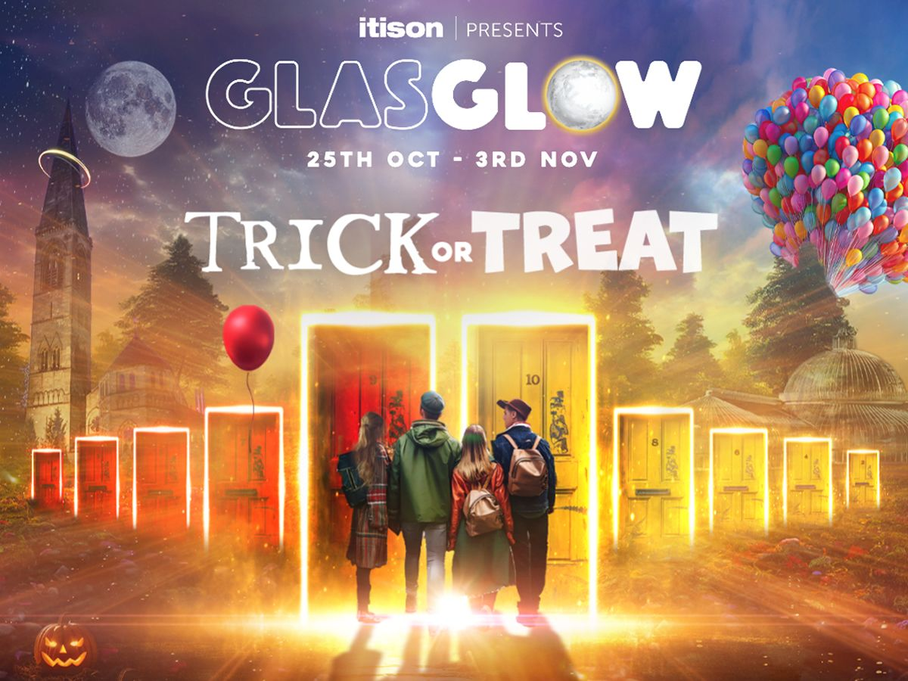

GlasGlow

Buckle up and discover ten epic worlds from BoneYard and CarnEvil to Clowntown and Haunted Hoose, cosy up at CampSite, meet our pumpkin pals at The Patch, get gooey at Marshmallowland, fly away at UP, face off in House of Mirrors and discover the magic of Halloween at GLOW!
The show brings together amazing immersive sound and light displays, beautiful photo opportunities, a gourmet street food village, loads of unforgettable interactive moments and Marshmallowland, a cosy fairlylit nook dedicated to all things mallow, to create an incredible outdoor adventure inherently routed in Glasgow culture.
Fast Pass & Mallow tickets are back again this year, giving those with tickets access to a dedicated entrance plus a campfire classic marshmallow skewer and queue hops straight into the show’s legendary Marshmallowland.
Organisers are aiming to make GlasGLOW as accessible and inclusive as possible and will be hosting a Relaxed Session on Thurs 31st October at 4.45pm as well as welcoming the team from Pamis with their Changing Place toilets from the 31st of October to 2nd of November. Sensory guides, a quiet space and GLOW passes will also be available to help anyone with sensory sensitivities.
The trail will take around 50-70 minutes.
The show is fully outdoors and suitable for all ages.
This year's show has a few zones some may find a little scary - alternative paths are available.